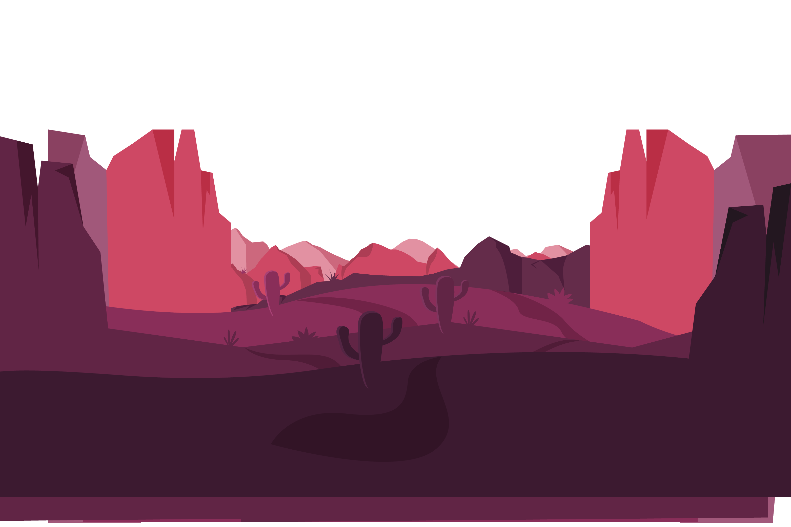
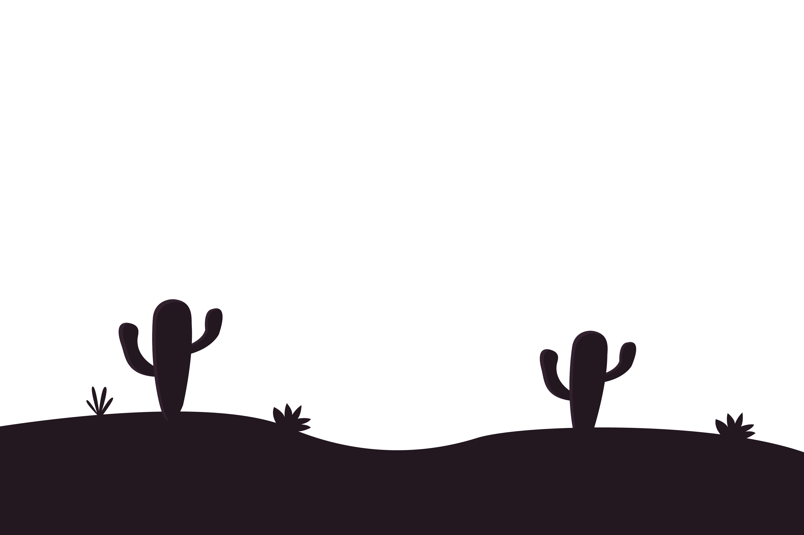
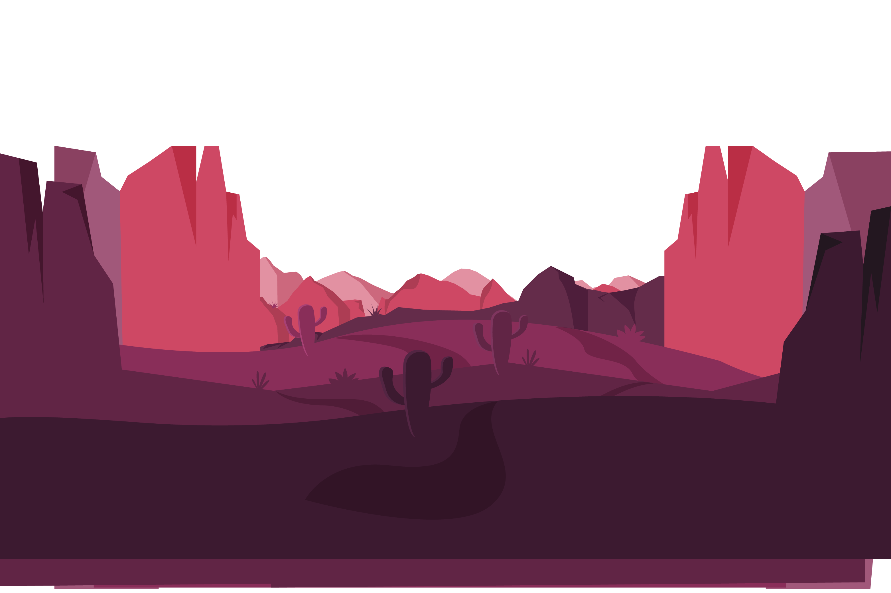
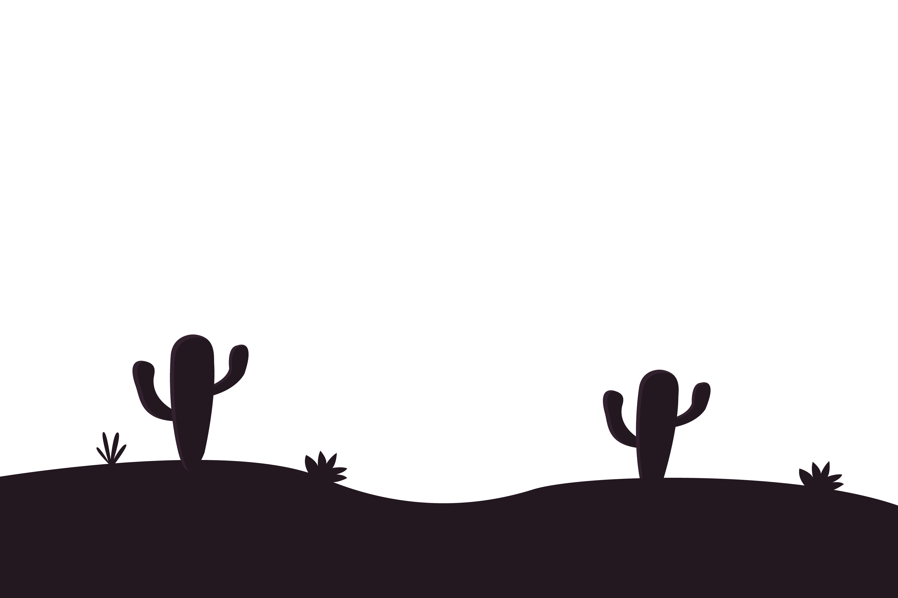
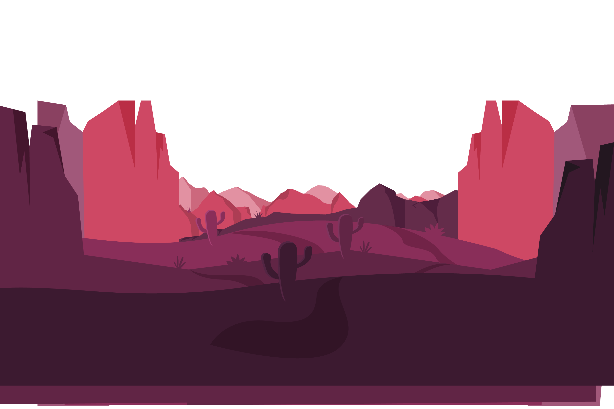
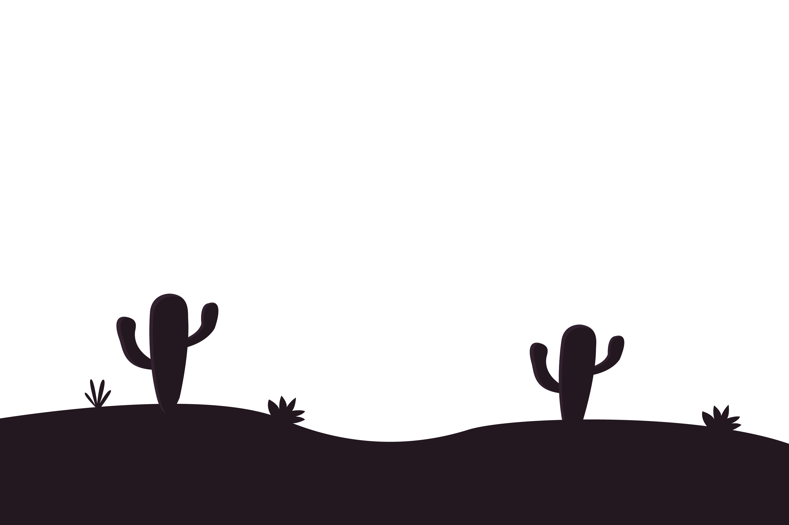
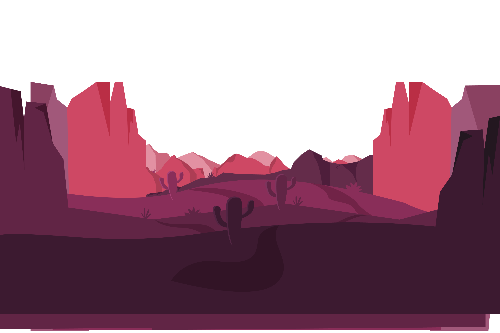
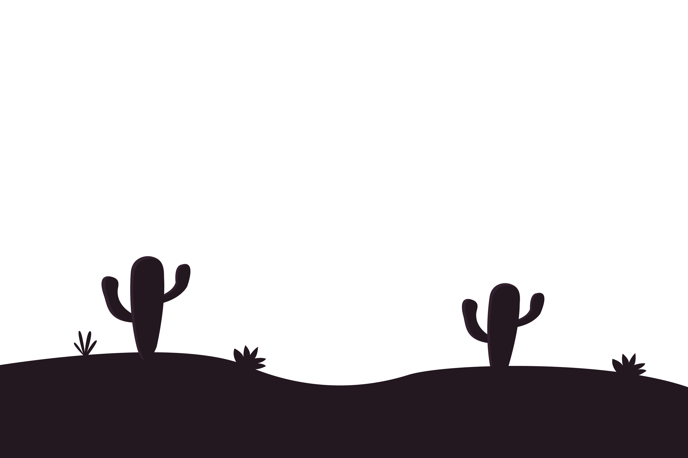

Parallax scrolling is a visual effect where the background of a web page appears to stay still while the foreground shifts vertically or horizontally. Parallax scrolling is used to add visual interest to a website and engage users as they scroll through a web page. In a parallax scrolling effect, both the foreground and background are moving, but the background typically moves much more slowly, giving the illusion of depth. Done correctly, parallax scrolling produces a fascinating and seamless virtual experience. If you want to add a parallax scrolling effect to your website, you should consider the following tips. Use it selectively. Parallax scrolling is much more powerful when you use it on one particular element as opposed to all pages and all the time. Use it in headers and titles, or maybe on your home page only. You want parallax scrolling to strengthen your website’s design, not distract users. Image compression is key. Parallax scrolling uses a variety of media files and CSS shapes to create a sense of depth. You don’t want to compromise your web performance and user experience with large image files that load too slowly. Play with color. Parallax scrolling isn’t just about the images in the foreground and background, but about color, too. You might use more desaturated tones in the background and more lively colors in the foreground to create an even greater sense of depth. Though there are several approaches to achieving a parallax scrolling effect, making the background move slower than the foreground is the most popular. A slower moving background embodies the same type of feeling as when you are inside a moving vehicle looking out: the sky and clouds in the background appear to move at a slower pace than the trees and houses in the foreground. Let’s take a look at this effect in play.